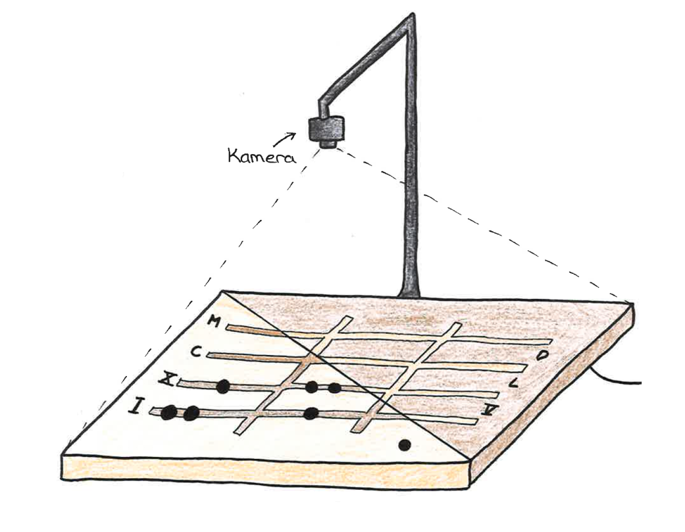

Cyberphysisches Rechenbrett - rechnen mit römischen Zahlen
Baue dir dein eigenes cyberphysisches Rechenbrett mit einem Raspberry-Pi und rechne mit den römischen Zahlen mittels Bilderkennung.
Baue dir dein eigenes cyberphysisches Rechenbrett mit einem Raspberry-Pi und rechne mit den römischen Zahlen mittels Bilderkennung.